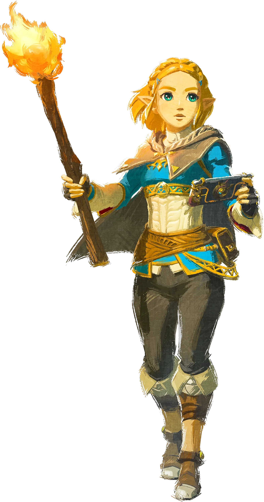
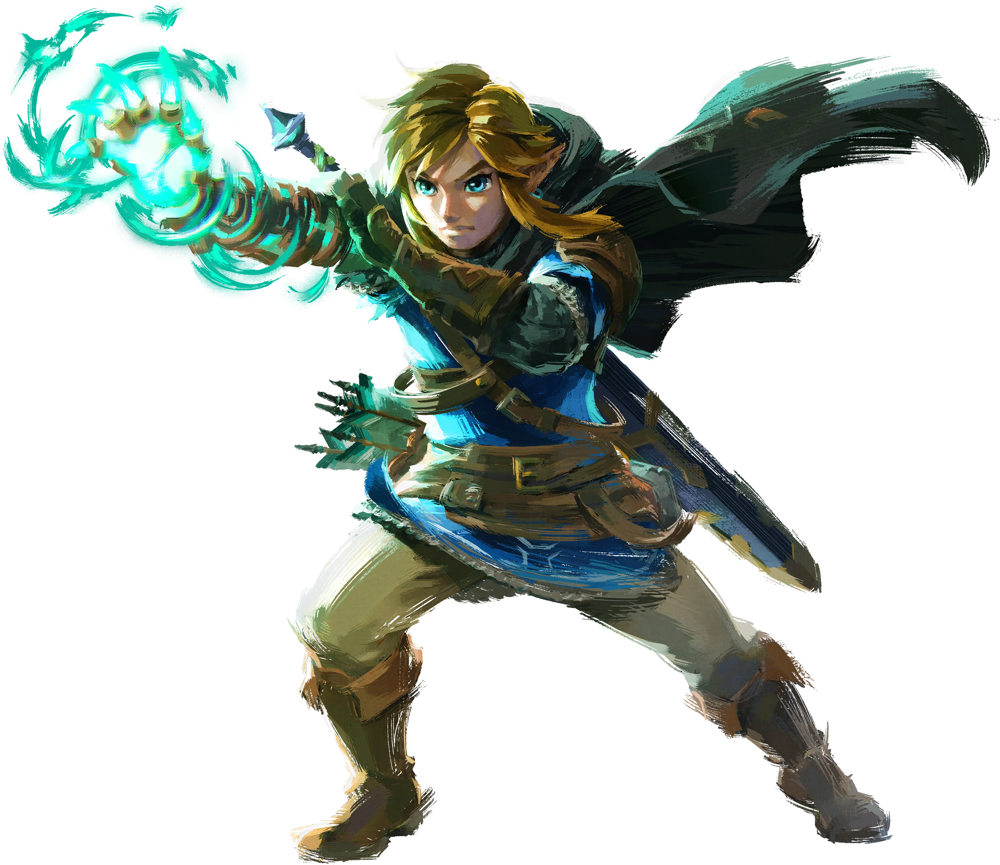

THE PRINCESS OF HYRULE
젤다 ZELDA
왕국의 운명과 자신의 가능성 사이에서.
두려움 속에서도, 지킬 미래를 선택하는 사람.
THE LEGEND OF ZELDA · TWO SOULS, ONE STORY
잊혀진 기억에서도, 아득한 시간의 끝에서도.
서로를 향해 나아가는 젤다와 링크의 이야기.
PROLOGUE · 운명으로 만난 두 사람
봉인의 힘을 깨워야 하는 왕녀와, 퇴마의 검에 선택받은 기사. 처음부터 서로를 이해했던 것은 아닙니다.
같은 무게를 짊어지고 있다는 걸 알아가는 순간, 의무로 시작한 동행은 깊은 신뢰가 됩니다. 두 작품에 남겨진 기억을 따라 그 변화를 읽어봅니다.
이 페이지는 BOTW와 TOTK의 같은 젤다와 링크를 다룹니다.
THE PRINCESS OF HYRULE
왕국의 운명과 자신의 가능성 사이에서.
두려움 속에서도, 지킬 미래를 선택하는 사람.

THE HERO CHOSEN BY THE SWORD
말보다 행동으로, 언제나 곁에.
침묵 뒤에 무게를 감춘 채 다시 길을 나서는 사람.
CHAPTERS OF THEIR STORY
두 작품의 기억과 일기에 남은, 서로에게 가까워지는 순간들.
BREATH OF THE WILD
핵심 전개와 결말은
직접 열기 전까지 숨겨집니다.
BEYOND THE LEGEND
두 게임을 관통하는 것은
결국, 상대가 해낼 것이라는 믿음.
처음의 거리는 두 사람이 짊어진 기대에서 시작됩니다. 젤다는 링크의 침묵 속에도 자신과 닮은 부담이 있음을 알게 됩니다. 서로의 약함을 이해하면서 관계의 바탕이 달라집니다.
게임 속 근거 · BOTW 젤다의 일기링크는 젤다를 지키기 위해 움직이고, 젤다 역시 링크가 나아갈 길을 만듭니다. 두 작품을 함께 읽으면, 한 사람이 다른 한 사람의 미래를 가능하게 하는 관계가 드러납니다.
서사 해석 · 두 작품의 주요 기억과 결말친밀한 일기와 작은 배려, 서로를 위한 선택은 로맨스로 읽을 여지가 있습니다. 다만 이 페이지가 다루는 두 게임 본편에서 두 사람의 교제나 결혼이 명시되는 것은 아닙니다. 확실히 보이는 것은 깊은 신뢰와 애정입니다.
팬의 해석 · 관계의 명칭은 단정하지 않습니다EPILOGUE · 이어지는 마음
하이랄의 전설을, 두 사람의 이야기로 읽다.
기억을 다시 읽기두 게임의 본편을 기준으로 사건은 요약하고, 감정과 주제에 대한 해석은 별도로 표시했습니다. 아래 외부 자료에는 스포일러가 포함될 수 있습니다.
첫 화면의 풍경은 BOTW 공식 키 비주얼, 인물 이미지는 TOTK 공식 캐릭터 일러스트입니다.
Nintendo · 캐릭터 소개게임 이미지 및 캐릭터 © Nintendo.
이 사이트는 Nintendo와 무관한 비공식 팬 프로젝트입니다. 제목과 해설 문구는 게임 대사의 직접 인용이 아닙니다.